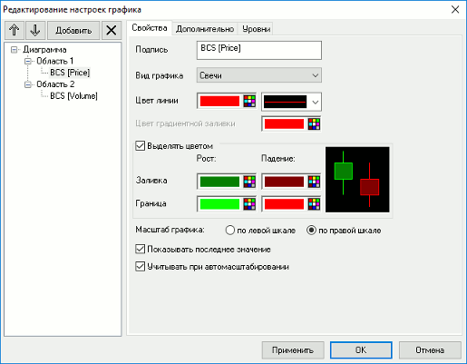
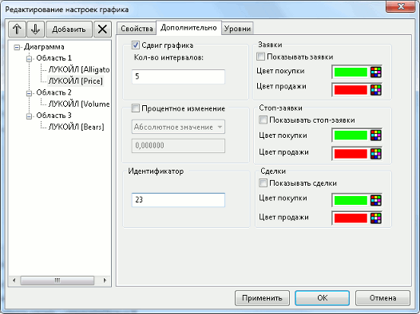
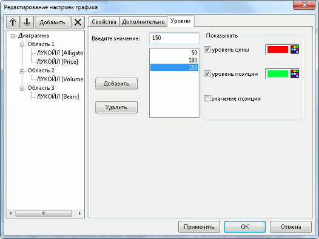

Настройка вида графика
На странице «<Наименование инструмента> [<Вид графика>]» выполняется настройка параметров внешнего вида определенного графика.
Вкладка «Свойства»

- «Подпись» – редактирование подписи к линии графика, например, чтобы сделать легенду более компактной.
- «Вид графика» – выбор типа графика:
- «Свечи»;
- «Линии»;
- «Линия с подсветкой»;
- «Линия с градиентом»;
- «Гистограммы»;
- «Бары»;
- «Точки»;
- «Пунктир».
- «Цвет линии» – выбор цвета толщины линии графика.
- «Цвет градиентной заливки» – выбор цвета градиентной заливки графика. По умолчанию используется цвет линии. Доступно для редактирования при выборе вида графика «Линия с подсветкой» или «Линия с градиентом».
- «Выделять цветом» – признак раскраски элементов графика разными цветами в зависимости от направления изменения значений индикатора в соответствующем интервале времени.
- «Рост» – выбор цвета, демонстрирующего повышение значения.
- «Падение» – выбор цвета, демонстрирующего понижение значения.
Графики Price и Volume изменяют цвет в зависимости от направления изменения
цены в данном интервале.
Настройка доступна для графиков видов «Свечи», «Бары» и «Гистограммы». Для графиков вида «Свечи» возможен выбор различных цветов для раскраски тела и границы свечи.
- «Масштаб графика» – выбор оси (левой или правой), по которой выполняется масштабирование графика по вертикали.
- «Показывать последнее значение» – признак отображения последнего значения цены (или настраиваемого индикатора) на оси графика.
- «Учитывать при автомасштабировании» – учитывать данный график при автомасштабировании, если на диаграмме отображается несколько графиков. По умолчанию флажок включен.
- Настройка должна быть включена хотя бы для одного графика на каждой оси.
Вкладка «Параметры»
Вкладка содержит параметры настройки индикаторов. Доступна для индикаторов технического анализа.
Вкладка «Дополнительно»

- «Сдвиг графика» – позволяет сдвигать график по оси времени на указанное количество интервалов. Для сдвига вперед (в будущее) используйте положительные значения, для сдвига назад – отрицательные.
- «Процентное изменение» – при установленном флажке на оси значений (ординат) графика откладывается не абсолютное значение параметра, а его относительное отклонение от начального значения, в процентах. В качестве исходного значения используется:
- «Абсолютное значение» – значение, указанное в поле ниже;
- «Цена закрытия» – цена закрытия предыдущего дня.
- «Идентификатор» – уникальный строковый идентификатор, присваиваемый графику. Идентификатор используется при получении доступа к указанному графику средствами языка QLua или QPILE.
- «Заявки» – настройка отображения заявок на графике:
- «Показывать заявки» – отображать на графике горизонтальные линии, соответствующие ценам активных заявок клиента.
- «Цвет покупки», «Цвет продажи» – цвета линий для заявок на покупку и на продажу.
- «Стоп-заявки» – настройка отображения стоп-заявок на графике:
- «Показывать стоп-заявки» – отображать на графике горизонтальные линии, соответствующие ценам активных стоп-заявок пользователя.
- «Цвет покупки», «Цвет продажи» – цвета линий для заявок на покупку и на продажу.
В зависимости от типа условной заявки, линии на графике отображаются на следующих уровнях:
- «Стоп-лимит», «Со связанной заявкой» – на уровне
стоп-цены;
- «Стоп-цена по другому инструменту» – на уровне стоп-цены
(линия отображается на графике инструмента, по которому задано условие);
- «Тэйк-профит» и «Тэйк-профит и стоп-лимит» – на
уровне стоп-цены тэйк-профита.
- «Сделки» – настройка отображения сделок на графике:
- «Показывать сделки» – отображать на графике сделки пользователя. Сделки отображаются маркером в виде треугольника, показывающего направленность сделки (вверх – покупка, вниз – продажа).
- «Цвет покупки», «Цвет продажи» – цвета маркеров для сделок по цене покупки и по цене продажи.
Вкладка «Уровни»
На вкладке задаются значения для горизонтальных линий (уровней), отображаемых на графике. Уровни откладываются по значениям той оси, к которой привязан график.

Чтобы задать новый уровень, в поле «Введите значение:» укажите его значение и нажмите кнопку «Добавить». Значение добавится в список, расположенный ниже.
- Значение указывается в единицах цены, кроме случая, когда для графика на вкладке «Дополнительно» включен признак «Процентное изменение».
Чтобы удалить уровень, выберите его в списке и нажмите кнопку «Удалить».
Флажки в разделе «Показывать» позволяют отобразить на графике следующие
уровни значений и выбрать их цвет:
- Настройки недоступны для графика, построенного по параметру, отличному от «Price».
- «Уровень цены» - показать линию на уровне цены последней сделки. Если
вместо графика цены будет создан график по параметру, то линия будет
соответствовать последнему значению параметра.
- «Уровень позиции» - показать линию на уровне значения цены
приобретения, взятой из таблицы «Позиции по инструментам» по данному коду клиента и данному
инструменту.
- «Значение позиции» - показать на вертикальной шкале значение позиции.
Настроенные уровни цен запоминаются в шаблоне графика. При копировании окна графика нажатием клавиш «Ctrl»+«N» они переносятся в новое окно.
См. также: